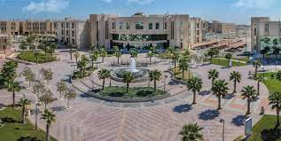

About Imam Abdulrahman Bin Fiasal University
Imam Abdulrahman Bin Faisal University opened its doors to women and men in 1975 with two pioneering colleges, the College of Medicine and the College of Architecture. Almost four decades later this academic institution has grown into a leading research university with 21 colleges spread throughout the Eastern Province and a student population of over 45,000.
As a preeminent research-based institution, Imam Abdulrahman Bin Faisal University continues to grow and develop, continually assessing and improving its curricula and expanding its academic capabilities in all disciplines, while at the same time engaging the public in addressing environmental and community challenges.
Collages
Health
College of Medicine
College of Dentistry
College of Nursing
College of Applied Medical Science
College of Clinical Pharmacy
College of Public health
College of Applied Medical Sciences - Jubail
Engineering
College of Architecture and Planning
College of Design
College of Engineering
Sciences and Management
College of Applied Studies and Community Service
College of Business Administration
College of Computer Science and Information Technology
College of Science
Applied College
Arts and Education
College of Arts
College of Education
College of Science and Humanities - Jubail
Collage of Sharia and Law
Research
IAU is one of the most well respected research institutions in the Kingdom. Our prolific faculty and researchers have made great strides across all disciplines from such diverse fields as medical breakthroughs to advances in environmental architecture. IAU’s commitment to research is evidenced by not only the juried scientific journals that are published here, but the numerous research entities that call IAU their home, including: the Deanship for Scientific Research, The Prince Mohamed Bin Fahd Center for Research and Consultation Studies, the Center for Scientific Publications, the Center for Urban Studies and the new Center for Patents and Technology Transfer.
Pictures
